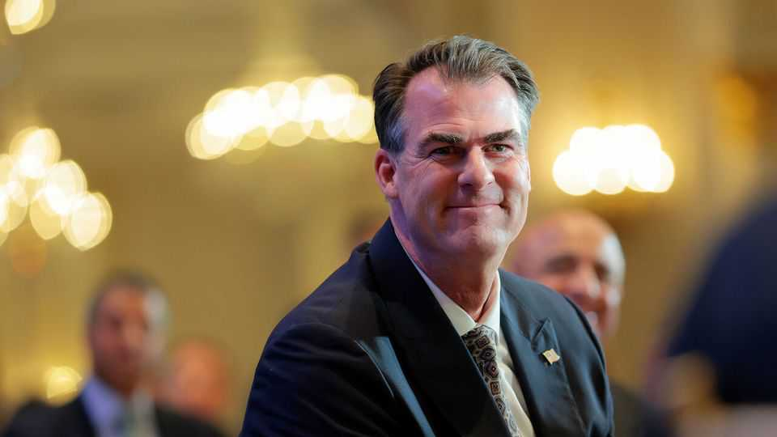

Oklahoma offers America a lesson in manners
A state wounded by extremism tries to guard against it

Aug 20th 2026
IT IS A coincidence that two of America’s best-known bipartisan political organisations were, until recently, led by Oklahomans. David Holt, the Republican mayor of Oklahoma City (pictured), headed the US Conference of Mayors, while Kevin Stitt, the Republican governor of Oklahoma, led the National Governors Association (NGA). These groups offer something novel in American politics: civility. Last year 81% of Democrats and 70% of Republicans said the opposing party makes them angry. But at recent gatherings in Long Beach, California (the mayors), and Oklahoma City (the governors), Democrats and Republicans high-fived, hugged and waxed eloquent about the dangers of America’s hyper-partisan politics.
This summer Messrs Holt and Stitt passed their gavels to new leaders. But it is worth considering why Oklahoman politicians seem especially interested in making America nice again. Both men have bucked their party and publicly disagreed with President Donald Trump. They cherish friendships with Democrats. Running cities and states demands a pragmatism that is not a prerequisite for a job in Congress. But more than that, many of Oklahoma’s political leaders came of age in the 1990s, when they witnessed their state respond to extremism with compassion.
In 1995 Timothy McVeigh set off a bomb that blew up the federal building in downtown Oklahoma City. Nearly 170 people were killed. It remains the deadliest act of domestic terrorism in American history. McVeigh wanted to retaliate against what he believed to be a tyrannical government. Mr Holt was in high school at the time, getting ready to deliver a campaign speech for student council vice-president. “There was this rumour backstage there’s been an explosion downtown,” he recalls. “We got back to class, and they were rolling the TVs in.”
After the bombing, the outpouring of support for victims, survivors and first responders became known as the “Oklahoma Standard”. “That was the phrase used to capture how our community embraced all the people who came to help,” says Mr Holt. It has become “a catch-all for being people who try to rise above darkness”.
Mr Holt says the bombing shaped his politics. “Part of the ethos of the city now is trying to do our part to push back against polarisation and dehumanisation,” he says, “because we have a scar in our downtown that reminds us what that inevitably leads to.” He has been a Republican since campaigning for George H. W. Bush in his fourth-grade classroom. But as mayor he has tried to foster inclusion, proclaiming Oklahoma City’s first LGBTQ Pride Week and meeting protesters for racial justice in 2020. Last year, at the memorial for the bombing, 230 mayors pledged to “reject political violence and recommit to the American experiment”.
Mr Stitt, who was a senior in college in 1995, attributes his niceties to “Oklahoma common sense”. “My grandmother said ‘You get more flies with honey than you do vinegar’,” he says, “so I’m trying to just be nice to everyone.”
Messrs Holt and Stitt admit that it will be hard to overcome the incentives that politicians have to be nasty. Mr Trump is America’s bully-in-chief—and Americans elected him president twice. But the Oklahomans aim to set a better example. They do not always succeed. At the NGA conference earlier this month Mr Stitt took a jab at California, a Democratic stronghold, and instantly expressed regret. “Man, I shouldn’t have said that, this is a bipartisan deal,” he said on stage.
They also offer more tangible reforms. Mr Holt thinks that doing away with closed party primaries, in which only party members can vote, would make it harder for extreme candidates to win nominations. (Research on whether open primaries produce more moderate candidates is mixed.) Mr Stitt—ever the conservative—prescribes more federalism and a smaller central government. “It’s gotten so big that Oklahomans, we’re worried that if Kamala Harris gets elected, she’s going to make Oklahoma like California,” he says.
Another prescription is the Oklahoma Standard itself. Other governors at the NGA conference expressed admiration for the state’s civic ethos. “What’s interesting about the Oklahoma Standard is it used to be the United States standard,” laments Spencer Cox, the Republican governor of Utah, who has long urged Americans to “disagree better”.
Outside the memorial in Oklahoma City there is a fence where mourners place flowers and photos of loved ones. Every year Kyle Genzer leaves a letter for his mother, who died in the blast. “This year brought one of the most beautiful moments—the birth of your first great-granddaughter,” he writes. “Holding her, we couldn’t help but think of you.” Mr Genzer, a high-school principal, thinks it’s important to keep talking about the bombing, both to honour the victims and to remind the living that disagreement need not harden into hatred. ■
Stay on top of American politics with The US in brief, our daily newsletter with fast analysis of the most important political news, and Checks and Balance, a weekly note that examines the state of American democracy and the issues that matter to voters.